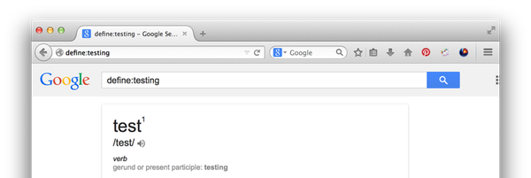
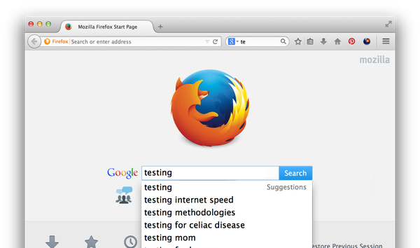
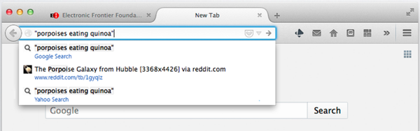

Search Measurement Plan
NotesOverview
The objective of this study is descriptive, not a hypothesis test. What’s the difference? Essentially, we are not dividing our users to groups where some get the treatment (search suggestion) and control (as it is now). Therefore, it is okay to use Telemetry data.
With telemetry, we cannot measure things on a per-user basis (only per-session or per-hour), so the data is going to be noisy, but it should hopefully be enough to show trends.
To have something to compare against, we need to be recording the following things now (before we launch search suggestions):
- Total number of searches
- Total number of searches from new tab
- Total number of searches from about:home
- Total number of searches from urlbar
Once we land search suggestions, we will add the following probes:
- Total number of searches from new tab that used search suggestion
- Total number of searches from about:home that used search suggestion
- Total number of searches from urlbar that used search suggestion
Analysis
- We will look the total searches / total session by BuildID
- This will answer “Did the total number of searches change?”
- Looking at BuildID will control of day effect \o/
- We will look at search locations / total session
- This will answer “Where did people search?”
- Also, we can see if the search location changed over BuildID
- We will look at search suggestions
- This will answer “Did people use the search suggestion feature?”
- We don't have historical data to compare, so we will show something like “x% of searches from new tab used search suggestion”
- We will look at bogus protocols
- This will answer “Did people use the bogus protocol feature?”
- We don't have historical data to compare, so we will show something like “x% of searches from the urlbar had a bogus protocol”
Urls with bogus protocols.
To measure the number of searches we get from this change, we will rely on UITelemetry and FHR. We are measuring the number of searches from the urlbar in both, and we are measuring the number of keyword searches from the urlbar in UITelemetry. From the UITelemetry measurements, we can calculate the added number of searches due to the keyword search feature for Nightly, Aurora, and Beta, and then map that to FHR to approximate the number of extra searches on Release.
Christina ran an analysis on the data we have from FHR, and it showed no statistically significant changes to the number of searches. This is somewhat expected, since keyword searches are a bit of an wizard-level feature, and the people who would have used them in the past will have learned that they didn’t work.
Search suggest on newtab.

Once we land bug 1028985, we’ll add UITelemetry probes to track the number of clicks on entries in the search suggestion list. This will tell us how often the search suggest is being used.
Search suggest on about:home.
Once we land bug 612453, we’ll add UITelemetry probes to track the number of clicks on entries in the search suggestion list. This will tell us how often the search suggest is being used.
This might seem very similar to the previous bug. That’s because it is doing much the same thing, but for a different page.
Search results in the urlbar.
Once we land bug 1040721, we’ll add UITelemetry probes to track the number of clicks on entries in the autocomplete list if the API considers it to be a search. We will compare this to the number of searches clicked, to see if more people are using the new search functionality in the autocomplete, or if they are repeating autocompleted searches.